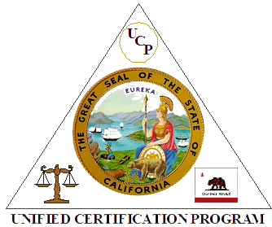
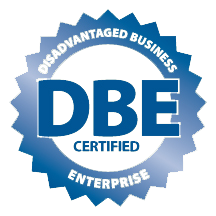
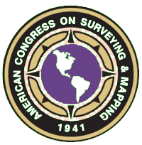

Philosophy
Since 1961, our projects have been widely accepted in California and beyond. We pride ourselves on exceeding the city and county expectations, maintaining developers’ budgets and projections versus actual economic ups and downs, and communicating effectively with the individual homeowner and surrounding neighbors during endless battles between clients’ requests and regulatory requirements, city standards and actual job conditions.
Our history is interwoven with that of our clients’ projects and events. We count time not by hours but by our professional successes. Our expertise extends to both the private and public sectors as we continue to provide land survey services for large scale community development, infrastructure and individual homeowners alike. Our passion shows from the moment we make contact. We have found that establishing a common ground between all parties is the foundation of each successful project. As projects become larger and more complex we always keep this in mind.
History

Mr. Henry Arana’s talent as a developer, planner and surveyor is the cornerstone of Transamerican Engineers' success. His passion is clearly embedded in the company’s legacy and reflected in the quality of the company’s services at all levels of development. We have remained stable through decades of ups and downs in the economy. Our dedication has shown through in the positive, optimistic, straightforward and honest approach we take to accomplish the best possible work for those we professionally serve.
We have now entered into a new era. Technology has broadened the possibilities in our profession. We strive to surpass our clients' expectations by continuing to develop and utilize the latest technology and state-of-the-art services.
About Us
At Transamerican Engineers, boundary and topographic surveys are the keystones of our professional services. The proper interpretation of assessor's maps, survey records, deeds and other property references, lends to the production of very accurate field surveys, which are the essence of our practice. We remain on the cutting edge of technology and are a full-service firm that specializes in Subdivision & Parcel Maps, Condominium Conversions & New Construction Condos, Boundary & Topographic Surveys, Architectural Site Surveys, GPS & GIS Surveys, 3D Scanning (LIDAR), BIM Modeling, Construction Inspection/Management, Legal Descriptions and Plats, Construction, Staking, As-Built Surveys, Land Planning, ALTA/ACSM Maps and more.
Our principals have successfully participated in a vast range of projects including harbor and channel dredging, aviation and port facility expansion, commercial high-rise construction, highway improvements and rail extensions. Our construction and project management experience provide assistance with multiple aspects ranging from contractual requirements to project controls to value engineering, quality assurance and much more. We continuously strive to give emphasis to professionalism, quality, innovation and reliability.
Certifications
City and County of San Francisco
LBE Certified Firm No. CMD081810991

US Department of Transportation
CUCP / DBE Firm ID No. 39472
- 
- 
Professional Affiliations
The American Congress on Surveying & Mapping (ACSM)
The California Land Surveyors Association (CLSA)

Connect With Us
contact us today for more info 415 553 4092